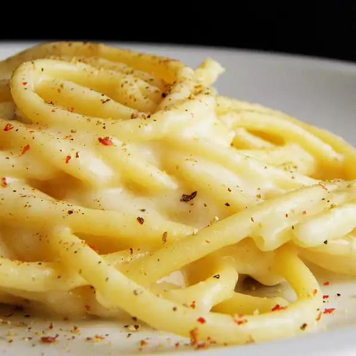

Bucatini Cacio e Pepe

This peasant food comes from Roman sheep herders who had little time and money to spend on eating. They used their sheep's cheese and a bit of the water that cooked the pasta to create a cream, then added black pepper to give it some extra flavor. Cheap, easy, and fast: this was perfect for them and for us even today!
Ingredients
- salt
- bucatini
- Pecorino Romano cheese
- freshly ground black pepper
Steps :
- Bring a large pot of water to a boil and add salt. Cook bucatini in the boiling water, stirring occasionally, until tender yet firm to the bite, 8 to 10 minutes.
- Place grated Pecorino Romano cheese into a large glass bowl and mix with a fork to make sure the cheese contains no lumps.
- Once the bucatini are al dente, lift them out with a spaghetti fork or tongs and put them directly into the bowl with the cheese. Do not allow the water to drain too much.
- Add one ladle of pasta water to the bowl. Stir the bucatini around until a cream has formed. Add more pasta water, little by little, until a thick cream has formed. Sprinkle freshly ground pepper over the pasta. Toss and serve immediately.